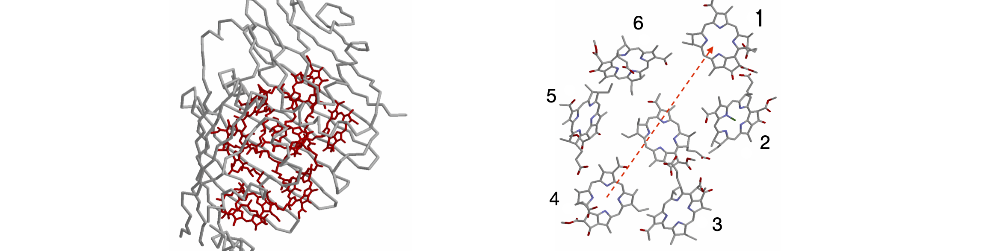
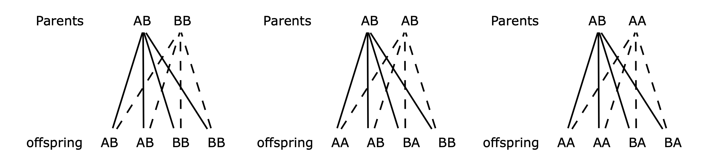

Questions 51 - 54¶
Q51 A \(\rightleftharpoons\) B \(\to\) C- kinetics¶
Calculate the time profile of species A, B and C for the scheme
where rate constants are \(k_{12}, k_{21}, k_2\), and \(k_3\). Use python to investigate the population of each species, as outlined after equation 41, with, for example, \(A_0 = 1, B_0 = C_0 = 0\) and rate constants \(k_{12} = 5, k_{21} = 6, k_2 = 1, k_3 = 0.2\). Try other values of rate constants and initial populations for yourself. (You will find that the algebraic equations produced are very large, so use python/numpy numerical methods from the start.) Convince yourself that the populations you graph make sense.
Strategy: Write down the rate equations and then translate them into the matrix form. Use python to do the integration by the matrix method outlined in the text, Algorithm 7.6.
Q52 Energy transfer in photosynthesis¶
Overwhelmingly, life on earth depends upon photosynthesis. In this process, photons are captured in molecular_antennae_ that always consist of many pigments, which are usually, but not exclusively, chlorophyll held in a protein. The energy from the lowest excited state of these pigments is passed to a special pair in the reaction centre where electron transfer occurs. The electrons are eventually used to reduce carbon dioxide to carbohydrates and eventually to biomass. The antenna, pigment-protein complex of Prosthecochloris aestuarii has seven bacteriochlorophyll (BChl) molecules between which Forster energy transfer occurs. The structure of this membrane bound protein has been determined by X-ray crystallography and is shown in Figure 57. The coordinates are in the Brookhaven data bank .pdb entry 3BCHL.
Energy transfer occurs from the excited state of one BChl molecule to another caused by the dipole - dipole interaction between the two molecules. However, energy can leave one molecule and be transferred to a third or back to the second or on to a fourth and so forth. In this way, the excitation energy diffuses around the antenna and the population of each pigment changes until (dynamic) equilibrium is established between the molecular excited states. Energy transfer to the special pair and fluorescence both compete with this process. The reaction centres, which quench the excited states, are found in another nearby protein and with this quenching and by fluorescence, the total excited state population is eventually lost but not until long after this equilibrium between excited states is established.
The rate constant of energy transfer can be calculated between any pair of molecules and is
where \(R\) is the separation of the centres of the chlorophyll molecules at the Mg atoms. \(R_0\) is a characteristic distance which depends upon the overlap of the donor emission spectrum with the absorption spectrum of the donor molecule and which has a constant value for any donor–acceptor pair. The parameter \(\chi\) is an orientational factor that we shall ignore for simplicity. The donor and acceptor can be the same type of molecule because the absorption and emission spectra of chlorophyll overlap with one another. This type of energy transfer was first predicted by Forster and normally carries his name (Forster 1959; Bennett & Kellogg 1967). It is a very successful way of describing energy transfer in photosynthetic organisms and is the basis of the technique called FRET, or fluorescence, resonance, energy transfer.
Figure 56. Schematic of energy diffusion (repeated energy transfers) between molecules by the Forster dipole - dipole mechanism. The circles represent the molecules whose positions are fixed. Some possible transfer steps are shown as lines; the thin lines represent just a single transfer, and the thicker lines, repeated transfer back and forth between a pair of molecules. The \(R^{-6}\) dependence of the rate of separation ensures that the energy makes many rapid transfers between close pairs of molecules, which tend to slow energy diffusion, but occasional large steps counteract this effect. The diffusion ends when either the molecule fluoresces, or undergoes intersystem crossing (to form a triplet state), or the energy reaches the trap.
If in the antenna protein, molecule 1 is excited, Figure 57, use python/numpy to calculate the populations on each of the other molecules as a function of time when only fluorescence occurs to deplete the excited state. Assume that any one molecule can transfer to any other, with a rate constant depending on its distance away, and any molecule can therefore receive energy from every other molecule; very democratic!
(a) Why do the calculated rate constants have such a wide range?
(b) Plot the population of molecule 1 and 7 vs time, and any other you want to observe, and estimate how long it takes the energy to equilibrate around the antenna.
(c) Comment on the shape of the calculated populations. Why do they all reach a finite value rather than zero?
(d) Add a quenching term, a rate constant with value \(10^{12}\; \mathrm{s^{-1}}\), so that energy is lost irreversibly but only from molecule 1 to a nearby quencher, such as a reaction centre.
Strategy: Use the data from the .pdb given below to calculate the separation between each pair of Mg atoms. Then write down the rate constant matrix for the transfer from any one molecule to each of the others. This is a \(7\times 7\) matrix and every element will be filled. Because all the molecules are the same, the transfer rate constant from molecule 1 to 2 is the same as the reverse 2 to 1; there is no Boltzmann factor to take into account and therefore the matrix is symmetrical. Assume that the BChl molecules decay with a lifetime of \(5\) ns so that the fluorescence rate constant is \(k_f = 1/5 \times 10^9\;\mathrm{ s^{-1}}\) and \(R_0 =70\; \overset{\mathrm{o}}A\).
Data extracted from .pdb 3BCHL (Tronrud et al. 1986, b. 443).
\(\begin{array}{c|cc} \hline & x & y & z &\quad(\overset{\mathrm{o}}A) \\ \hline \text{HETATM 2509 MG BCL 1} & 53.113 & 58.877 & 20.553 & 1.00 \\ \text{HETATM 2575 MG BCL 2} & 56.307 & 55.372 & 32.462 & 1.00\\ \text{HETATM 2641 MG BCL 3} & 49.690 & 44.549 & 44.813 & 1.00\\ \text{HETATM 2707 MG BCL 4} & 39.128 & 41.873 & 42.544 & 1.00\\ \text{HETATM 2773 MG BCL 5} & 34.082 & 47.474 & 30.966 & 1.00\\ \text{HETATM 2839 MG BCL 6} & 41.714 & 47.644 & 22.127 & 1.00\\ \text{HETATM 2905 MG BCL 7} & 47.867 & 43.555 & 32.934 & 1.00\\ \hline \end{array}\)

Figure 57. FMO protein with peptide surrounding the BChl molecule, and right, slightly magnified and at a different orientation, to show the bacteriochlorophyll molecules but with their phytyl tails removed for clarity of display. The arrows show transfer from molecule 4 to molecule 1. (Structures drawn with Rasmol from .pdb 3BCHL. The Mg atom in each BChl is not shown. The two structures are not on the same scale).
Strategy: Although this calculation looks as though it might be very difficult, it is just a bigger version of what was already done in the previous question. The hard part is defining the matrix, so remember that each molecule can transfer to any other. This means that each diagonal term has a rate constant for transfer to every other molecule as well as the rate of fluorescence decay. Each molecule also receives energy from every other one, which means that each off-diagonal has one rate constant from each molecule. First write down the rate equation for one molecule, and then use this as a template to work out the rates for the others. It will be easiest to label the rate constants \(k_{12}, k_{34}\) and so on where the subscripts label the molecules, \(k_{12}\) corresponding to transfer from 1 to 2. Unless you want dozens of pages of algebra, put numerical values into the matrix before calculating the eigenvalues and eigenvectors.
Q53 Matrix raised to power¶
You are presented with a problem in which the matrix
is to be raised to the \(b^{th}\) power and then its determinant evaluated. Direct calculation will inevitably lead to numerical errors when \(b=50\) for example. Algebraically, it would be beyond any direct calculation. Therefore, how could this calculation be achieved in general and then with \(b=50\).
Strategy: A similarity transform is the method to use as this enables us to make a diagonal matrix \(\Lambda\), via \(\pmb{X}^{-1}\pmb{MX} = \pmb{\Lambda}\). This can then be manipulated to make \(\pmb{M}^n\) with \(\pmb{M}^{b} = \pmb{X\Lambda}^{b}\pmb{X}^{-1}\).
Q54 Inheritance¶
In autosomal inheritance, two genes are exchanged during reproduction, but these do not determine in the sex of the organism. Inheriting these genes could mean, in humans for example, producing brown eyes vs blue eyes or, in a flower, red petals vs blue. If an organism is autosomal dominant, a gene on one of the non-sex chromosomes is always expressed, even if only one copy is present. If the genes are AB with A being the dominant mutant, when offspring are produced with a BB partner, the result is as shown below in the left most column, Fig. 7.58. The makeup of offspring, by crossing two plants with AB or AA genes, is also shown in Figure 58, except for AA with AA and BB with BB that are unchanged.

Figure 58. Mixing genes.
A horticulturalist is fertilizing plants only with a strain known to be BB, which has traits she wants to encourage. When the plants, which are an equal mixture of all possible combinations of A and B genes, are fertilized they are then replaced by their offspring, and the process repeated \(n\) times. Assume that the chances of producing each offspring are equal. The total probability after n generations is always
(a) Draw a table of the probabilities of the genetic make-up of all possible offspring. Make the total chance of having any offspring from their parent’s equal to one. Put parents into columns and offspring into rows.
(b) Show that after n generations, the plants have the genetic make-up
(c) Using a similarity matrix, show that the genetic make-up of the plants after n generations is predominantly BB. How many generations does it take to produce at least \(90\)% of plants of this type?
Strategy: Use the diagrams above to work out what the effect of fertilization will be on individuals with genetic make up AA, BA \(\equiv\) AB, and BB. In biologists’ jargon, three genotypes can be produced, which are BB, AB, and AA.